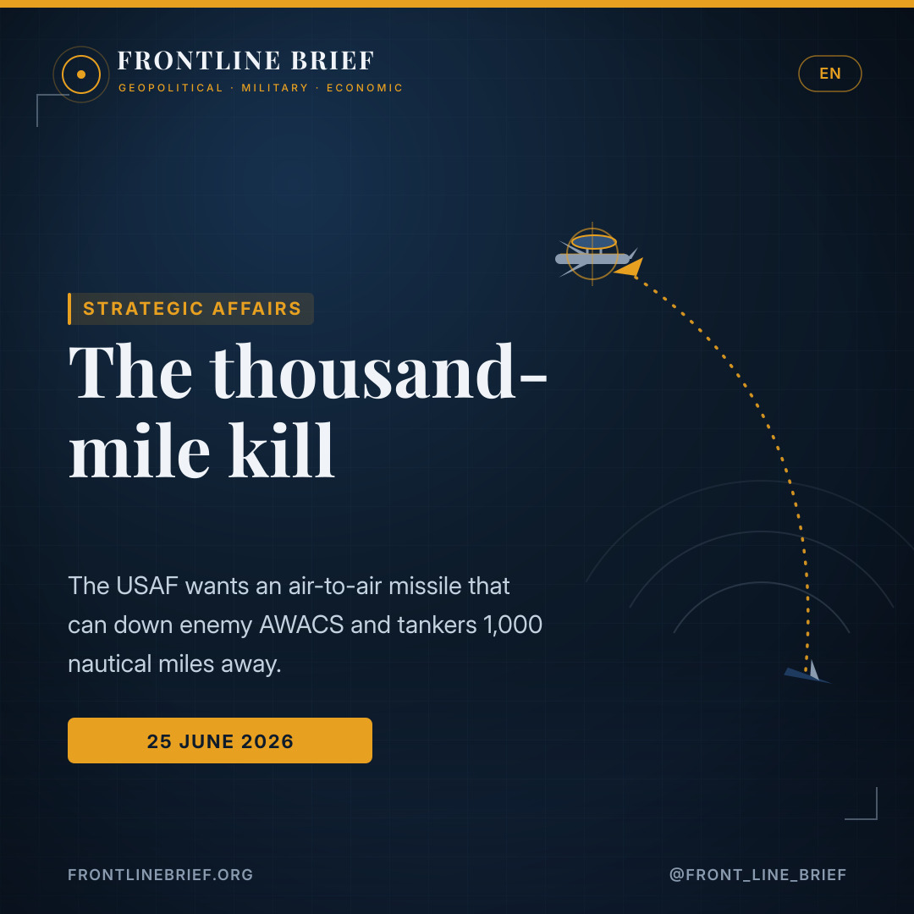
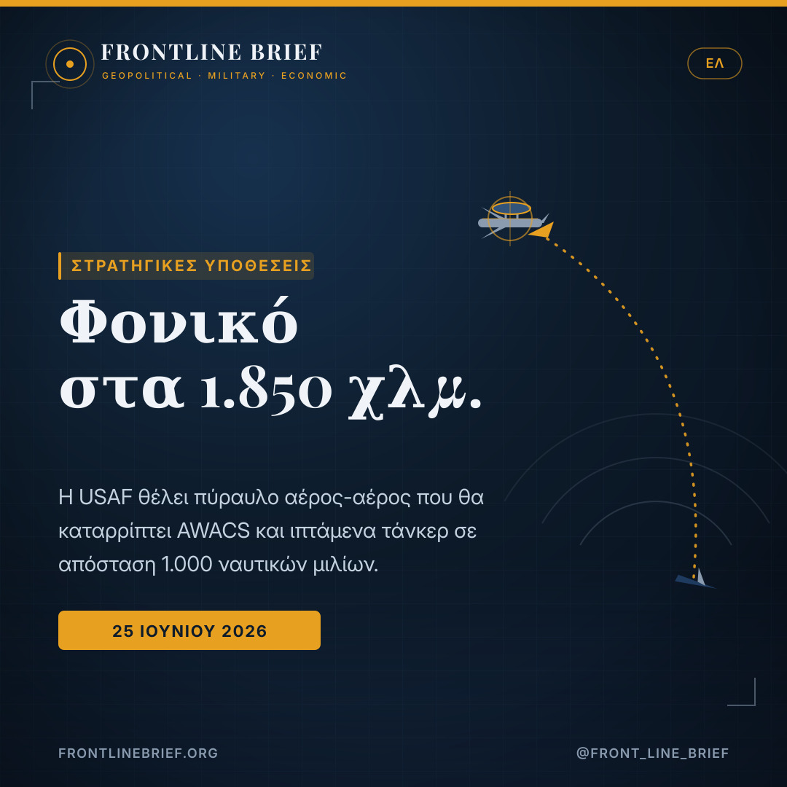
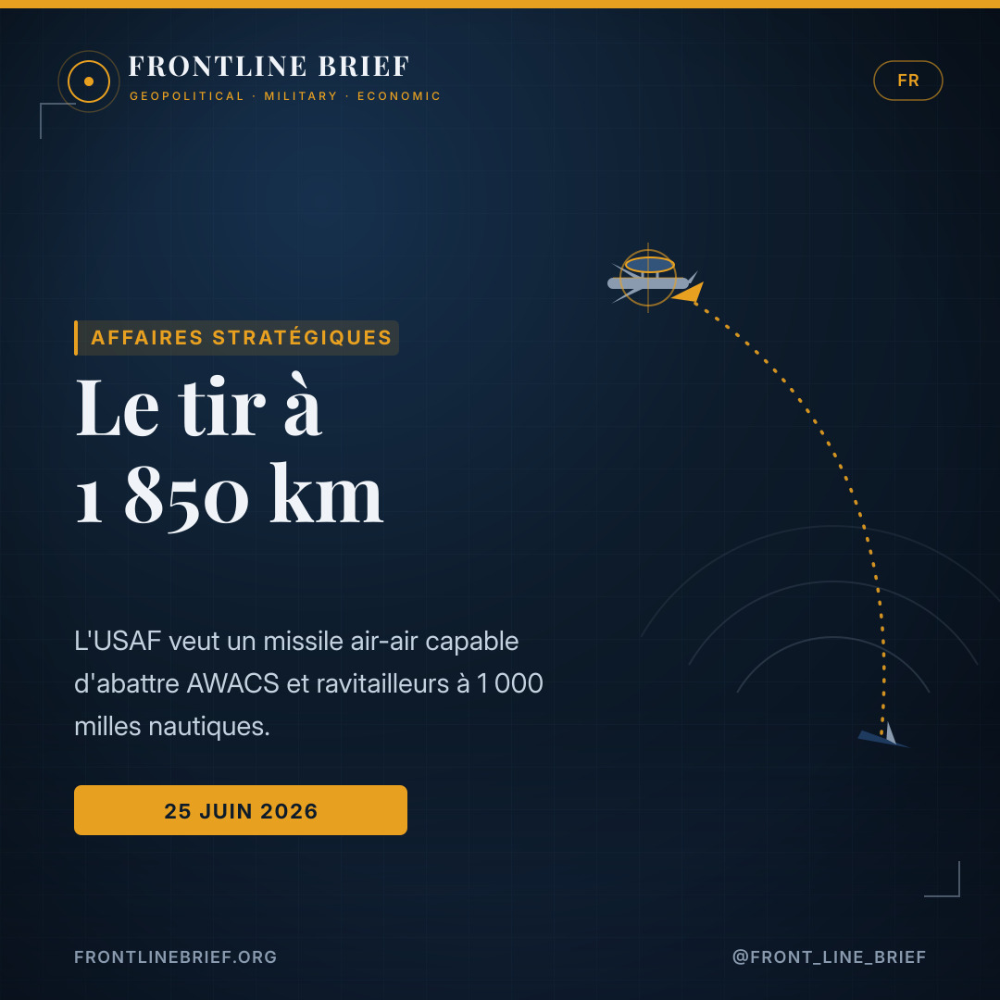
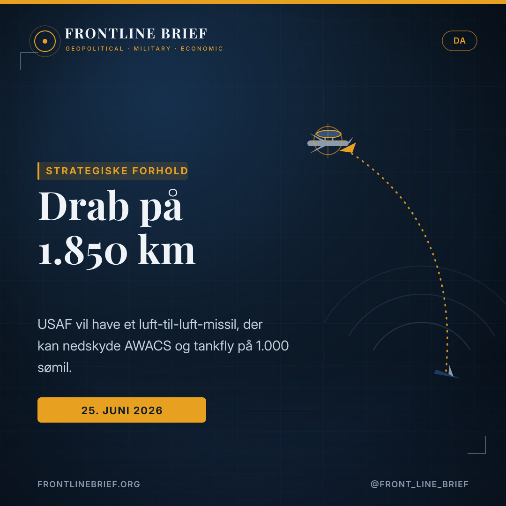
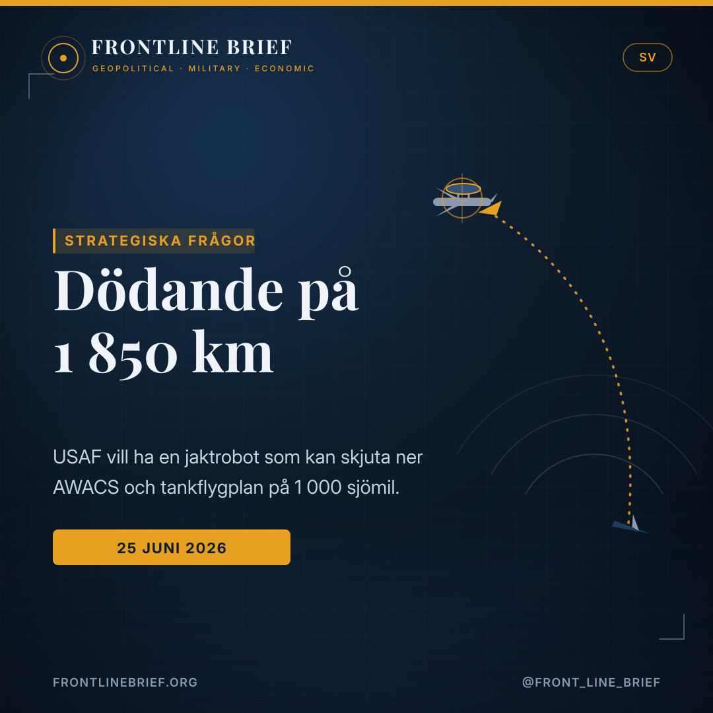

The thousand-mile kill: the USAF wants an air-to-air missile that can reach 1,000 miles
The US Air Force has asked industry for a new air-to-air missile able to strike targets at least 1,000 nautical miles away — roughly ten times the reach of today's best AMRAAM. The point is to kill the enemy's AWACS, tankers and other rear-area aircraft from outside their world, and to pierce the air-defence bubbles that China is building.





Ten times the reach
The Air Force Long Range Weapon would come in air-to-air and air-to-surface forms, each with a threshold range of at least 1,000 nautical miles — about ten times the latest AMRAAM. A classified industry day is set for Eglin AFB on 25–26 August.
Hitting the high-value few
The weapon is built to down the aircraft that make modern air war work: AWACS and other radar planes, tankers, ISR and even bombers, often before they know they are being shot at. The Air Force wants modular, open-architecture designs and a single 'Master Integrator'.
Aimed at China's A2/AD
From the East or South China Sea, an AFLRW-armed aircraft could in theory hold targets deep inside China at risk — with the right data. That is the catch: the missile only works inside a space-enabled 'kill web'.
Ten times the reach
The US Air Force is preparing to brief defence contractors, behind closed doors, on a requirement that would redraw the rules of air combat: a new air-to-air missile able to engage targets at least 1,000 nautical miles away. That is roughly ten times the reach credited to the latest AIM-120 AMRAAM, the workhorse missile of Western air forces. The programme, dubbed the Air Force Long Range Weapon (AFLRW), would also have an air-to-surface variant at the same extreme distance. A classified industry day is scheduled at the Guided Weapons Evaluation Facility on Eglin Air Force Base in Florida on 25 and 26 August.
The 'AWACS killer'
A missile of this reach is not really meant for dogfights. Its value lies in killing the aircraft that hold a modern air campaign together: airborne early warning and control planes, aerial tankers, intelligence and surveillance platforms, even bombers. These high-value assets normally orbit far behind the front, beyond the reach of fighters; a thousand-mile weapon puts them at risk where they thought they were safe, often without warning until it is too late to react. The Air Force is asking for modular, open-architecture designs and a single 'Master Integrator' to assemble the finished round.
An air-to-air missile that reaches a thousand miles only works if a 'kill web' can see the target — which is why this is as much about satellites as missiles.
Why now: China and the A2/AD problem
The driver is the maturing Chinese anti-access and area-denial system. Beijing has invested heavily in radar planes, electronic-warfare aircraft and its own ever-longer-ranged air-to-air missiles, some already out-reaching their American counterparts. The Pacific makes the geometry vivid: the gap between Guam and Taiwan is about 1,500 nautical miles, while Okinawa sits roughly 390 away. An aircraft cruising over the East or South China Sea with a 1,000-mile missile could, in principle, threaten targets well inside the Chinese mainland — provided the targeting data exists.
The hard part: targeting at 1,000 miles
That proviso is the whole challenge. A missile fired this far cannot rely on its launch aircraft's own radar. It has to be plugged into a deeply networked 'kill web' that stitches together sensors across air, land, sea, space and cyberspace, drawn from every service. Above all it depends on a space-based aircraft-tracking layer, which is exactly why the Pentagon is racing to field new satellite constellations for persistent moving-target indication. Without that web, a thousand-mile shot is blind.
What could carry it
The physics are demanding too. Covering such distances quickly enough to catch fleeting targets may require a multi-stage design, an air-launched ballistic approach, or something more exotic. The carriers are a question in their own right: the Air Force has openly mused about the B-21 Raider acting as an air-to-air 'weapons truck', and a heavy bomber is a natural home for a missile this large. For now the requirement is a statement of intent — but it points squarely at a future in which the kill web, not the fighter, is king.
Δεκαπλάσιο βεληνεκές
Η Πολεμική Αεροπορία των ΗΠΑ ετοιμάζεται να ενημερώσει, κεκλεισμένων των θυρών, αμυντικές εταιρείες για μια απαίτηση που θα ξαναγράψει τους κανόνες του αερομαχικού πολέμου: έναν νέο πύραυλο αέρος-αέρος ικανό να προσβάλλει στόχους σε απόσταση τουλάχιστον 1.000 ναυτικών μιλίων. Πρόκειται για περίπου δεκαπλάσιο βεληνεκές από αυτό που αποδίδεται στις τελευταίες εκδόσεις του AIM-120 AMRAAM, του «αλόγου εργασίας» των δυτικών αεροποριών. Το πρόγραμμα, με την ονομασία Air Force Long Range Weapon (AFLRW), θα έχει και παραλλαγή αέρος-εδάφους στην ίδια ακραία απόσταση. Μια διαβαθμισμένη «ημέρα βιομηχανίας» έχει προγραμματιστεί στη βάση Eglin της Φλόριντα στις 25 και 26 Αυγούστου.
Ο «φονιάς των AWACS»
Ένας πύραυλος τέτοιου βεληνεκούς δεν προορίζεται πραγματικά για κοντινές αερομαχίες. Η αξία του βρίσκεται στην εξουδετέρωση των αεροσκαφών που κρατούν όρθια μια σύγχρονη αεροπορική εκστρατεία: αεροσκάφη έγκαιρης προειδοποίησης και ελέγχου, ιπτάμενα τάνκερ, μέσα επιτήρησης και αναγνώρισης, ακόμη και βομβαρδιστικά. Αυτά τα υψηλής αξίας αεροσκάφη συνήθως περιπολούν βαθιά στα μετόπισθεν, εκτός εμβέλειας των μαχητικών· ένα όπλο χιλίων μιλίων τα θέτει σε κίνδυνο εκεί που νόμιζαν ότι ήταν ασφαλή, συχνά χωρίς προειδοποίηση μέχρι να είναι πολύ αργά. Η USAF ζητά αρθρωτούς, ανοιχτής αρχιτεκτονικής σχεδιασμούς και έναν ενιαίο «Κύριο Ολοκληρωτή» που θα συναρμολογεί τον τελικό πύραυλο.
Ένας πύραυλος αέρος-αέρος που φτάνει τα χίλια μίλια λειτουργεί μόνο αν ένα «δίχτυ θανάτου» βλέπει τον στόχο — γι' αυτό το θέμα αφορά εξίσου δορυφόρους και πυραύλους.
Γιατί τώρα: η Κίνα και το πρόβλημα A2/AD
Η κινητήρια δύναμη είναι το ωριμάζον κινεζικό σύστημα άρνησης πρόσβασης και απαγόρευσης περιοχής (A2/AD). Το Πεκίνο έχει επενδύσει βαριά σε αεροσκάφη ραντάρ, σε αεροσκάφη ηλεκτρονικού πολέμου και στους δικούς του, ολοένα μεγαλύτερου βεληνεκούς, πυραύλους αέρος-αέρος — μερικοί από τους οποίους ήδη υπερτερούν των αμερικανικών. Ο Ειρηνικός κάνει τη γεωμετρία εύγλωττη: η απόσταση Γκουάμ–Ταϊβάν είναι περίπου 1.500 ναυτικά μίλια, ενώ η Οκινάουα απέχει περίπου 390. Ένα αεροσκάφος που πετά πάνω από την Ανατολική ή τη Νότια Σινική Θάλασσα με πύραυλο 1.000 μιλίων θα μπορούσε, θεωρητικά, να απειλήσει στόχους βαθιά στην κινεζική ενδοχώρα — εφόσον υπάρχουν τα δεδομένα στόχευσης.
Το δύσκολο κομμάτι: η στόχευση στα 1.000 μίλια
Αυτή ακριβώς η προϋπόθεση είναι όλη η πρόκληση. Ένας πύραυλος που εκτοξεύεται τόσο μακριά δεν μπορεί να βασιστεί στο ραντάρ του αεροσκάφους που τον εκτόξευσε. Πρέπει να συνδεθεί σε ένα βαθιά δικτυωμένο «δίχτυ θανάτου» που ράβει μαζί αισθητήρες σε αέρα, ξηρά, θάλασσα, διάστημα και κυβερνοχώρο, από όλους τους κλάδους. Πάνω απ' όλα εξαρτάται από ένα διαστημικό στρώμα παρακολούθησης αεροσκαφών — γι' αυτό και το Πεντάγωνο τρέχει να αναπτύξει νέους σχηματισμούς δορυφόρων για μόνιμη ανίχνευση κινούμενων στόχων. Χωρίς αυτό το δίχτυ, μια βολή χιλίων μιλίων είναι τυφλή.
Τι θα μπορούσε να τον μεταφέρει
Και η φυσική είναι απαιτητική. Η κάλυψη τέτοιων αποστάσεων αρκετά γρήγορα ώστε να προλαβαίνει φευγαλέους στόχους ίσως απαιτεί σχεδιασμό πολλαπλών σταδίων, μια προσέγγιση τύπου αεροεκτοξευόμενου βαλλιστικού, ή κάτι πιο εξωτικό. Οι φορείς είναι ζήτημα από μόνοι τους: η Αεροπορία έχει μιλήσει ανοιχτά για τον ρόλο του βομβαρδιστικού B-21 Raider ως ιπτάμενου «φορτηγού όπλων» αέρος-αέρος, και ένα βαρύ βομβαρδιστικό είναι φυσική στέγη για έναν τόσο μεγάλο πύραυλο. Προς το παρόν η απαίτηση είναι μια δήλωση πρόθεσης — δείχνει όμως ευθέως προς ένα μέλλον όπου βασιλιάς είναι το δίχτυ θανάτου, όχι το μαχητικό.
Dix fois la portée
L'US Air Force s'apprête à présenter aux industriels de la défense, à huis clos, une exigence qui redessinerait les règles du combat aérien : un nouveau missile air-air capable d'atteindre des cibles à au moins 1 000 milles nautiques. Soit environ dix fois la portée attribuée aux dernières versions de l'AIM-120 AMRAAM, le missile de référence des aviations occidentales. Le programme, baptisé Air Force Long Range Weapon (AFLRW), comporterait aussi une version air-sol à la même distance extrême. Une journée industrielle classifiée est prévue sur la base d'Eglin, en Floride, les 25 et 26 août.
Le « tueur d'AWACS »
Un missile d'une telle portée n'est pas vraiment fait pour le combat tournoyant. Sa valeur tient à la neutralisation des avions qui font tenir une campagne aérienne moderne : avions de guet et de contrôle, ravitailleurs, plateformes de renseignement et de surveillance, voire bombardiers. Ces appareils de grande valeur évoluent d'ordinaire loin derrière le front, hors de portée des chasseurs ; une arme de mille milles les met en danger là où ils se croyaient à l'abri, souvent sans alerte jusqu'à ce qu'il soit trop tard. L'Air Force réclame des conceptions modulaires, à architecture ouverte, et un unique « maître intégrateur » pour assembler le missile complet.
Un missile air-air qui porte à mille milles ne fonctionne que si une « toile de mise à mort » voit la cible — d'où un sujet autant satellitaire que balistique.
Pourquoi maintenant : la Chine et le défi A2/AD
Le moteur, c'est la montée en puissance du dispositif chinois de déni d'accès et d'interdiction de zone (A2/AD). Pékin a massivement investi dans les avions radar, les avions de guerre électronique et ses propres missiles air-air de portée toujours plus grande — dont certains surclassent déjà leurs homologues américains. Le Pacifique rend la géométrie parlante : la distance entre Guam et Taïwan avoisine 1 500 milles nautiques, tandis qu'Okinawa n'en est qu'à environ 390. Un appareil patrouillant au-dessus de la mer de Chine orientale ou méridionale avec un missile de 1 000 milles pourrait, en théorie, menacer des cibles loin à l'intérieur du territoire chinois — à condition de disposer des données de ciblage.
Le plus dur : viser à 1 000 milles
Cette condition résume tout le défi. Un missile tiré à une telle distance ne peut compter sur le radar de son porteur. Il doit s'insérer dans une « toile de mise à mort » profondément maillée, reliant des capteurs dans l'air, sur terre, en mer, dans l'espace et le cyberespace, issus de toutes les armées. Il dépend surtout d'une couche spatiale de pistage des aéronefs — c'est précisément pourquoi le Pentagone se hâte de déployer de nouvelles constellations de satellites pour une détection permanente des cibles mobiles. Sans cette toile, un tir de mille milles est aveugle.
Ce qui pourrait l'emporter
La physique est exigeante elle aussi. Couvrir de telles distances assez vite pour frapper des cibles fugaces pourrait imposer une architecture multi-étages, une approche de type balistique air-lancé, ou quelque chose de plus exotique. Les porteurs sont une question en soi : l'Air Force a évoqué ouvertement le rôle du bombardier B-21 Raider en « camion à missiles » air-air, et un bombardier lourd est un foyer naturel pour un missile aussi grand. Pour l'heure, l'exigence est une déclaration d'intention — mais elle pointe droit vers un avenir où le roi est la toile de mise à mort, et non le chasseur.
Ti gange rækkevidden
Det amerikanske flyvevåben forbereder sig på at orientere forsvarsindustrien bag lukkede døre om et krav, der ville tegne luftkampens regler om: et nyt luft-til-luft-missil, der kan ramme mål mindst 1.000 sømil væk. Det er omkring ti gange den rækkevidde, der tilskrives de nyeste udgaver af AIM-120 AMRAAM, de vestlige flyvevåbens arbejdshest. Programmet, kaldet Air Force Long Range Weapon (AFLRW), ville også få en luft-til-overflade-variant på samme ekstreme afstand. En klassificeret industridag er planlagt på Eglin-basen i Florida den 25.–26. august.
«AWACS-dræberen»
Et missil med denne rækkevidde er ikke rigtig til kurvekamp. Dets værdi ligger i at nedkæmpe de fly, der holder en moderne luftkampagne sammen: varslings- og kontrolfly, tankfly, efterretnings- og overvågningsplatforme, ja selv bombefly. Disse højværdifly kredser normalt langt bag fronten, uden for jagerflyenes rækkevidde; et tusind-mils-våben sætter dem i fare dér, hvor de troede sig sikre, ofte uden varsel, før det er for sent. Flyvevåbnet beder om modulære, åben-arkitektur-designs og én samlet «Master Integrator», der samler det færdige missil.
Et luft-til-luft-missil, der når tusind mil, virker kun, hvis et «dræbernet» kan se målet — derfor handler det lige så meget om satellitter som om missiler.
Hvorfor nu: Kina og A2/AD-problemet
Drivkraften er det modnende kinesiske system til adgangsnægtelse og områdenægtelse (A2/AD). Beijing har investeret massivt i radarfly, elektronisk krigsførelsesfly og egne luft-til-luft-missiler med stadig længere rækkevidde — nogle overgår allerede deres amerikanske modstykker. Stillehavet gør geometrien tydelig: afstanden mellem Guam og Taiwan er omkring 1.500 sømil, mens Okinawa ligger cirka 390 væk. Et fly, der patruljerer over Det Østkinesiske eller Sydkinesiske Hav med et 1.000-mils-missil, kunne i princippet true mål langt inde i det kinesiske fastland — forudsat at måldata findes.
Det svære: at ramme på 1.000 mil
Netop det forbehold er hele udfordringen. Et missil, der affyres så langt, kan ikke stole på sit bærefly's egen radar. Det skal kobles ind i et dybt netværksbaseret «dræbernet», der syr sensorer sammen i luft, på land, til søs, i rummet og i cyberspace, hentet fra alle værn. Frem for alt afhænger det af et rumbaseret lag til sporing af fly — netop derfor haster Pentagon med at indsætte nye satellitkonstellationer til vedvarende sporing af bevægelige mål. Uden det net er et tusind-mils-skud blindt.
Hvad der kunne bære det
Fysikken er også krævende. At dække så store afstande hurtigt nok til at fange flygtige mål kan kræve et flertrins-design, en luftaffyret ballistisk tilgang eller noget mere eksotisk. Bærerne er et spørgsmål for sig: flyvevåbnet har åbent luftet B-21 Raider-bombeflyet som et luft-til-luft-«våbenlastbil», og et tungt bombefly er et naturligt hjem for et så stort missil. For nu er kravet en hensigtserklæring — men det peger lige mod en fremtid, hvor dræbernettet, ikke jagerflyet, er konge.
Tio gånger räckvidden
Det amerikanska flygvapnet förbereder sig på att informera försvarsindustrin bakom stängda dörrar om ett krav som skulle rita om luftstridens regler: en ny jaktrobot som kan träffa mål minst 1 000 sjömil bort. Det är ungefär tio gånger den räckvidd som tillskrivs de senaste versionerna av AIM-120 AMRAAM, de västliga flygvapnens arbetshäst. Programmet, kallat Air Force Long Range Weapon (AFLRW), skulle också få en variant mot markmål på samma extrema avstånd. En hemligstämplad industridag är planerad på Eglin-basen i Florida den 25–26 augusti.
«AWACS-dödaren»
En robot med denna räckvidd är egentligen inte gjord för kurvstrid. Dess värde ligger i att slå ut de flygplan som håller ihop en modern luftkampanj: varnings- och stridsledningsflyg, tankflygplan, spanings- och övervakningsplattformar, till och med bombflyg. Dessa högvärdesflygplan kretsar normalt långt bakom fronten, utom räckhåll för jaktplan; ett tusenmilsvapen sätter dem i fara där de trodde sig säkra, ofta utan förvarning tills det är för sent. Flygvapnet efterfrågar modulära konstruktioner med öppen arkitektur och en enda «huvudintegratör» som sätter samman den färdiga roboten.
En jaktrobot som når tusen mil fungerar bara om ett «dödarnät» kan se målet — därför handlar det lika mycket om satelliter som om robotar.
Varför nu: Kina och A2/AD-problemet
Drivkraften är det mognande kinesiska systemet för tillträdes- och områdesnekande (A2/AD). Peking har investerat tungt i radarflygplan, flygplan för elektronisk krigföring och egna jaktrobotar med allt längre räckvidd — somliga överträffar redan sina amerikanska motsvarigheter. Stilla havet gör geometrin tydlig: avståndet mellan Guam och Taiwan är omkring 1 500 sjömil, medan Okinawa ligger ungefär 390 bort. Ett flygplan som patrullerar över Öst- eller Sydkinesiska havet med en robot på 1 000 mil skulle i teorin kunna hota mål långt inne på det kinesiska fastlandet — förutsatt att måldata finns.
Det svåra: att rikta på 1 000 mil
Just det förbehållet är hela utmaningen. En robot som avfyras så långt kan inte förlita sig på bärflygplanets egen radar. Den måste kopplas in i ett djupt nätverkat «dödarnät» som syr ihop sensorer i luft, på land, till sjöss, i rymden och i cyberrymden, från alla försvarsgrenar. Framför allt är den beroende av ett rymdbaserat lager för flygplansspårning — just därför skyndar sig Pentagon att fältsätta nya satellitkonstellationer för ihållande spårning av rörliga mål. Utan det nätet är ett tusenmilsskott blint.
Vad som skulle kunna bära den
Fysiken är också krävande. Att täcka sådana avstånd snabbt nog för att hinna ikapp flyktiga mål kan kräva en flerstegskonstruktion, en luftavfyrad ballistisk lösning eller något mer exotiskt. Bärarna är en fråga i sig: flygvapnet har öppet talat om bombflyget B-21 Raider som en luftburen «vapenlastbil» för jaktrobotar, och ett tungt bombflyg är ett naturligt hem för en så stor robot. För närvarande är kravet en avsiktsförklaring — men det pekar rakt mot en framtid där dödarnätet, inte jaktplanet, är kung.
Sources
- TWZ (The War Zone) — USAF Wants Air-To-Air Missile With A Whopping 1,000-Mile Range (Joseph Trevithick, 25 June 2026)
- AFLCMC Armament Directorate — AFLRW industry-day notice (Eglin AFB, 25–26 August 2026)
- Frontline Brief background — AIM-120 AMRAAM, AIM-260 JATM, AIM-174B and China's PL-17 / AEW&C fleet